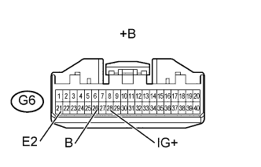

СИСТЕМА ПОДУШЕК БЕЗОПАСНОСТИ > Контрольная лампа аварийного состояния SRS не включается |
| 1.ПРОВЕРЬТЕ АККУМУЛЯТОРНУЮ БАТАРЕЮ |
Измерьте напряжение аккумуляторной батареи.
|
| ||||
| OK | |
| 2.ПРОВЕРЬТЕ РАЗЪЕМЫ |
Выключите зажигание.
Отсоедините провод от отрицательного (-) вывода аккумуляторной батареи и подождите не менее 90 секунд.
Проверьте правильность подключения разъемов к щитку приборов.
|
| ||||
| OK | |
| 3.ПРОВЕРЬТЕ ЖГУТ ПРОВОДОВ И РАЗЪЕМ (НАПРЯЖЕНИЕ ИСТОЧНИКА ПИТАНИЯ ЩИТКА ПРИБОРОВ) |
|  |
Выключите зажигание.
Отсоедините провод от отрицательного (-) вывода аккумуляторной батареи и подождите не менее 90 секунд.
Отсоедините разъем G6 от щитка приборов.
Подсоедините провод к отрицательному (-) выводу аккумуляторной батареи и подождите не менее 2 секунд.
Измерьте напряжение в соответствии со значениями, приведенными в таблице.
| Контакты для подключения диагностического прибора | Положение переключателя | Заданные условия |
| G6-28 (IG+) - G6-21 (E1) | Зажигание включено | 11 - 14 В |
| G6-26 (B) - G6-21 (E2) | Всегда | 11 - 14 В |
| *a | Вид спереди разъема со стороны жгута проводов: (к щитку приборов) |
|
| ||||
| OK | |
| 4.ПРОВЕРЬТЕ КОНТРОЛЬНУЮ ЛАМПУ АВАРИЙНОГО СОСТОЯНИЯ SRS (КОРОТКОЕ ЗАМЫКАНИЕ НА МАССУ) |
Выключите зажигание.
Отсоедините провод от отрицательного (-) вывода аккумуляторной батареи и подождите не менее 90 секунд.
Подсоедините разъем к щитку приборов.
Подсоедините провод к отрицательному (-) выводу аккумуляторной батареи и подождите не менее 2 с.
Установите замок зажигания в положение ON (ВКЛ).
Проверьте состояние контрольной лампы аварийного состояния SRS.
|
| ||||
| OK | ||
| ||